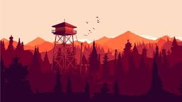

Géneros de los videojuegos y sus características
Los videojuegos se pueden clasificar en diferentes géneros, según su temática y mecánicas de juego. Algunos de los géneros más populares incluyen:
- Aventura
- Acción
- RPG (juego de rol)
- Estrategia
- Deportes
- Simulación
- Survival horror
- Puzzle
- Mundo abierto
- Ritmo
Aventura
Los juegos de aventura suelen incluir una trama que el jugador debe seguir, generalmente con la exploración y resolución de puzzles como mecánica principal.
Accion
Los juegos de acción se enfocan en la habilidad del jugador para enfrentar desafíos en tiempo real, generalmente con combates y plataformas como mecánicas principales.
RPG
Los RPG (juegos de rol) suelen tener una narrativa más profunda que los otros géneros y permiten a los jugadores tomar decisiones que afectan el desarrollo del juego.

Estrategia
Los juegos de estrategia se enfocan en la planificación y gestión de recursos para lograr objetivos específicos, generalmente en un contexto histórico o fantástico.
Deportes
Los juegos de deportes simulan la práctica de diferentes disciplinas deportivas, generalmente incluyendo elementos de gestión de equipos y competiciones.
Simulacion
Los juegos de simulación intentan replicar una actividad o situación de la vida real
Survival Horror
Los juegos de survival horror se enfocan en la supervivencia del personaje principal, que suele encontrarse en un ambiente hostil lleno de peligros. Estos juegos suelen tener una atmósfera oscura y tensa, y pueden incluir elementos de terror y acción.
Puzzle
Los juegos de puzzle se centran en la resolución de acertijos y problemas lógicos para avanzar en la trama. Estos juegos pueden tener diferentes temáticas y mecánicas, pero todos tienen en común la necesidad de utilizar el pensamiento crítico y la habilidad para resolver problemas.

Mundo Abierto
Los juegos de mundo abierto permiten al jugador explorar un mundo virtual masivo y libremente, en el que puede interactuar con personajes, cumplir misiones y descubrir secretos. Estos juegos suelen ofrecer una gran cantidad de libertad y variedad de elecciones, y pueden tener diferentes temáticas y ambientaciones.

Ritmo
Los juegos de ritmo se centran en la habilidad del jugador para coordinar acciones con la música o sonidos del juego. Estos juegos pueden tener diferentes temáticas y mecánicas, pero todos tienen en común la necesidad de seguir un patrón rítmico y coordinar la acción con el tempo de la música.